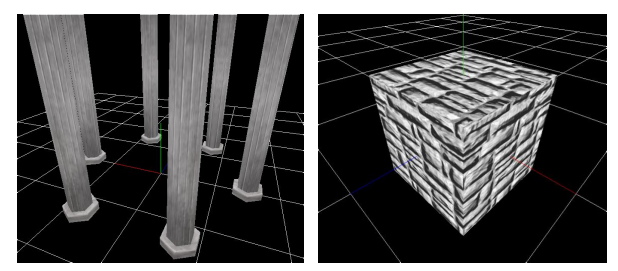
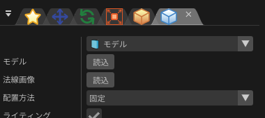

描画-モデル¶
概要¶
描画の設定で、「モデル」を選択した場合の描画及びパラメーターについて説明します。
「モデル」を選択すると、外部から読み込んだ3Dモデルが表示されます。
モデルに使用する色に関する画像は描画共通の色/歪み画像を使用しています。モデルによっては深度書き込み、深度テストを有効にしないと表示がおかしくなることがあります。

パラメーター¶

「描画」ウインドウ
モデル¶
モデルにはファイルとプロシージャルモデルが存在します。
ファイルから読み込む場合、表示に使用するFBX(.fbx)、metasequoiaファイル(.mqo)、もしくは、Effekseer用モデルファイル(.efkmodel)を指定します。 .efkmodel以外を指定した場合、指定したファイルと同じディレクトリに.efkmodelが生成されます。他アプリケーションでエフェクトを再生する場合、 この生成されたファイルが必要です。
アニメーション付きのFBX(.fbx)を読み込むこともできます。 FBXファイルで一番目に設定されているアニメーションが再生されます。
プロシージャルモデルを使用する場合、プロシージャルモデルのパネルでモデルを作成し、それを指定します。
配置方法¶
モデルをパーティクルに対してどのように配置するか指定します。 「ビルボード」の場合、モデルは常に視点側を向きます。「Z軸回転ビルボード」の場合、Z軸の回転は固定しつつ視点側をむきます。 「Y軸固定」の場合、Y軸の回転は固定しつつ視点側をむきます。「固定」の場合、モデルはパーティクルの回転に従います。
カリング¶
モデルの表示する面の方向を指定します。
全体色¶
モデル全体の色調を指定します。